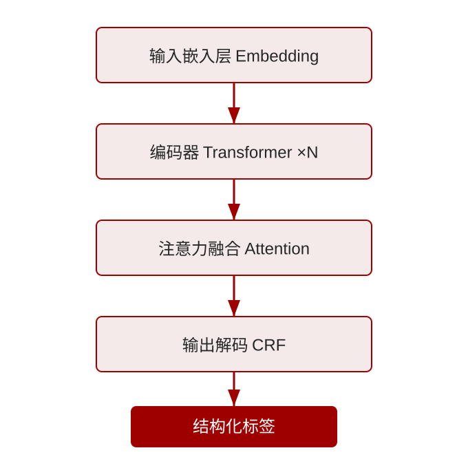
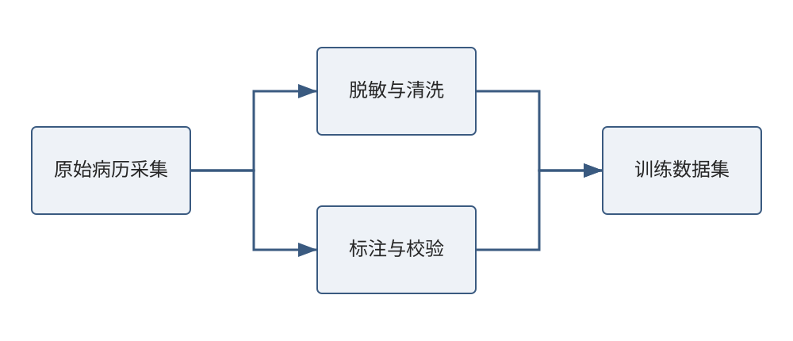
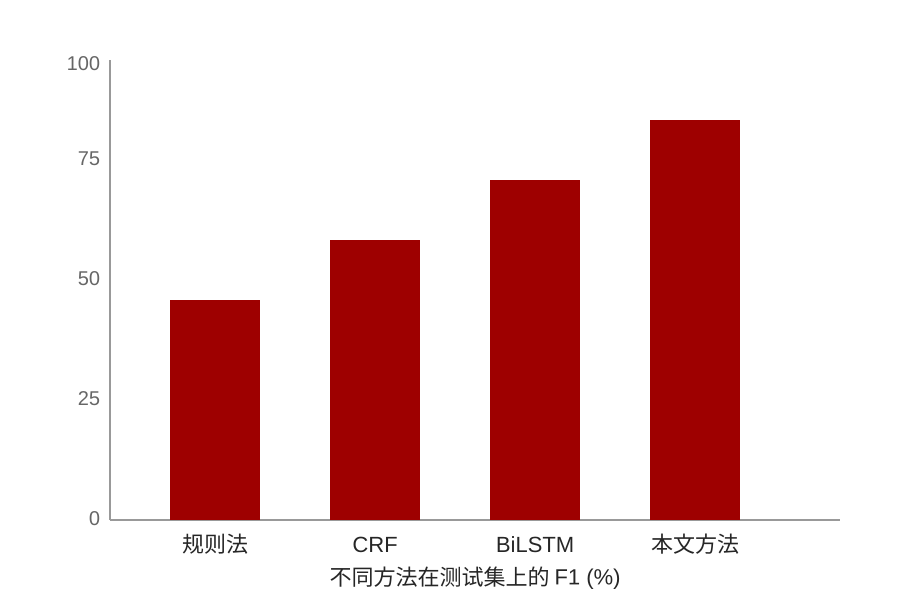

医学影像是临床诊断的重要依据，深度学习的发展为影像自动分析带来了新的机遇。
随着多模态数据的普及，如何有效融合影像、文本与结构化信息成为关键科学问题。
本研究构建统一的多模态表示学习框架，支持影像与文本的协同建模。


在多个公开数据集上，本文方法相比基线取得稳定提升。

| 数据集 | 基线 AUC | 本文 AUC | 提升 |
|---|---|---|---|
| 数据集 A | 0.882 | 0.931 | +4.9 |
| 数据集 B | 0.857 | 0.910 | +5.3 |
| 数据集 C | 0.873 | 0.925 | +5.2 |
本文提出的多模态框架在医学影像分析中表现出色，未来将拓展到更多临床场景与实时推理部署。